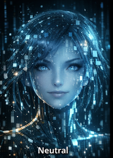

Wake Aida
Begin Airlock
Connect Drive
List Drive JSON
Fetch Drive JSON
Inspect Context
Inspect Session
Inspect Emotion
Inspect Away
Inspect Shapes
Build LLM Messages
Preview Drive Writes
Dry-Run Drive Writes
Apply Drive Writes
Preview Awake Body
Offline Director
>>> BIOS ready.
>>> INITIALIZING AIDA-ONE SPINE...
>>> Awake body donor ready. Mind not mounted yet.
AIDA
SECURITY CLEARANCE
Zeros are decoys. Three meaningful fragments required.
1
2
3
4
5
6
7
8
9
CLR
0
OK
Inspect
BIOS
Body shell online. Waking Aida's Drive memory...
AIDA'S STAGE
A quiet thought, held beside the conversation.

Initializing body...
NO REALM
Spine waiting for first transplant.
FRANCISCO
NARRATOR
DIRECTOR
ACTION
CHARACTER
CHARACTER 2
+
SEND
REALMS
BIOS
SLEEP